Survey of Low Power Design
从2017年初的观点来看，这篇报告的部分内容过时了，但是整体结构还是比较适合的。希望今年有时间能够出一版更新的版本。
低功耗设计的最根本驱动力是集成电路芯片的功耗随着工艺的进步不仅没有下降反而不断上涨。因为晶体管速度和集成度的上升速度超过了电路单次翻转所消耗能量的下降速度，所以单位面积芯片的功耗在迅速上升。而根据ITRS的预测，固定电源供电设备和移动设备中芯片的功耗发展趋势如图表 1所示。从中我们不难看出，各类芯片的各种功耗都在不断飞速上升，已经成为芯片设计者不容小觑的问题。
简介
低功耗设计的最根本驱动力是集成电路芯片的功耗随着工艺的进步不仅没有下降反而不断上涨。因为晶体管速度和集成度的上升速度超过了电路单次翻转所消耗能量的下降速度，所以单位面积芯片的功耗在迅速上升。而根据ITRS的预测，固定电源供电设备和移动设备中芯片的功耗发展趋势如图表 1所示。从中我们不难看出，各类芯片的各种功耗都在不断飞速上升，已经成为芯片设计者不容小觑的问题。
图表 1：芯片功耗的发展趋势：固定电源供电设备（左）和移动设备（右）
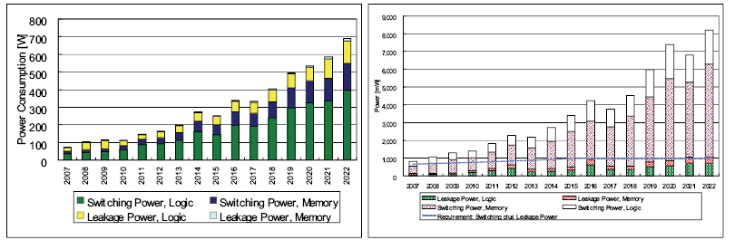
图表 2：不同工艺下芯片功耗发展趋势
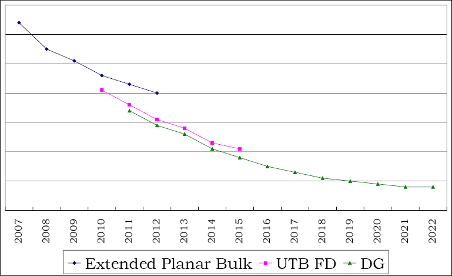
同时，随着工艺的进步，提升晶体管速度的难度在不断增加，导致晶体管延时的下降幅度不断减小，如图表 2所示。因此为了继续提升电路的整体性能，芯片设计者不断引入新技术来弥补晶体管速度的不足。例如，使用低介电常数（Low-K）的电介质和低电阻率的金属线（铜金属线）。除此之外，许多其他技术的引入会进一步增加功耗，例如使用SOI（Silicon-on-Insulator）衬底材料、增加载流子迁移率（Strained Silicon）和提高电磁场强度（Overdrive技术）。这些新技术的引入不仅增加了单位面积内功耗的总量，还增加了漏电功耗在整体功耗中的比重，从而使得一些移动应用迫切需要进行低功耗设计。
时至今日，如何降低动态功耗是现在几乎所有IC设计者关注的焦点之一。对于使用电池供电的移动应用而言，降低芯片功耗能够延长产品的续航时间。这是一个非常具有诱惑力的特性。对于使用固定电源供电的应用而言，降低芯片功耗也能带来许多好处。例如，可以降低设备成本，因为能够使用更便宜的封装；能够达到更高的性能，因为芯片温度下降了。对于企业级数据存储和通信基站这样的系统而言，降低功耗更能够节约巨大的成本，因为可以使用更便宜的制冷系统。
功耗的基础概念
功耗的分类
图表 3：功耗的分类
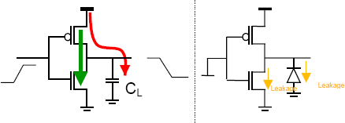
如图表 3所示，我们将功耗分为动态功耗、短路功耗和漏电功耗。动态功耗为图中红色线条，当PMOS管开启时，为负载电容CL充电的电流引起的功耗。短路功耗为图中绿色线条，当输入信号发生翻转时，PMOS和NMOS会同时处于半开启状态，此时流经PMOS和NMOS的电流引起的功耗。漏电功耗为稳定状态下，MOS管的漏电涓电流（图中黄色线条）引起的功耗。
从公式中我们可以看出，动态功耗与短路功耗均与翻转概率、频率和电压成正比。
EDA工具功耗报告的分类
在EDA工具的功耗报告中，功耗被分成三类：翻转功耗Switching，内部功耗Internal和漏电功耗Leakage。其中的漏电功耗很好理解，而翻转功耗与内部功耗与我们前面所提到的动态功耗和短路功耗稍有不同。
由于EDA流程是基于标准单元的设计方法，所以翻转功耗与内部功耗是针对标准单元来说的。我们知道每个电路节点都有寄生电容，因此也会有动态功耗。EDA工具的功耗报告中所提及的内部功耗就是当输入发生变化时，标准单元内部逻辑门的功耗损失，包括内部节点的动态功耗和内部MOS管的短路功耗。而翻转功耗指的是当输出发生变化时，标准单元对连线负载节点充电所引起的动态功耗。需要注意的是，单元A对单元B的输入端口PORT_IN进行充电所引起的动态功耗计算在内部功耗之列。
能量限制 vs. 功耗限制
在低功耗设计领域有两种不同的应用需要区分清楚：能量限制的应用和功耗限制的应用。能量限制的应用有手机、笔记本、MP3等由电池供电的设备；功耗限制的应用有RFID等由电磁场供电的设备。
如图表 4所示，能量是由电流的面积积分决定的，所以能量限制的应用需要考虑的是一定时间范围内（通常是指工作和待机时间），其能量消耗（电流随时间的积分乘以电压）尽可能小。而峰值功耗则仅仅由电流的最大值决定，所以功耗限制的应用需要考虑的是瞬态电流（由于片上电容的存在，考虑一个微小时间片内的电流积分）小于电源能提供的最大电流。
图表 4：能量 vs. 功耗
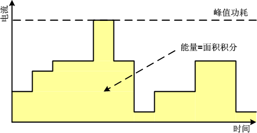
这两种应用的功耗优化策略稍有不同，但是这样的不同之处是非常关键的。对于能量限制的应用而言，应该首先保证每次操作都是有效操作，并尽可能降低每次操作时消耗的能量。至于这些有效操作何时发生并不是非常重要。而对于功耗限制的应用而言，应该在时间上尽可能分散操作，不让芯片的峰值功耗超过供电源能提供的最大功耗值，但是刻意使得某一时刻功耗非常低也是没有意义的。
本文的结构
在本文中，我们将首先讨论RTL级和门级（Gate-Level）下的一些优化策略。
能够归类于RTL级的低功耗技术比较少，因为在这一级大部分的优化都与具体的设计有直接的联系，所以能够提取出通用的方法并不多，主要是一些通用的在RTL编码中应该注意的问题。
现今的数字电路设计通常都是基于标准单元的设计方法，所以在门级我们主要关注一些可以借助EDA工具的优化策略和门单元的低功耗设计。
从前面的介绍中我们可以看到，动态功耗和短路功耗都与电压有直接的联系。所以降低电源电压是最直接也是最有效的低功耗设计手段。所以在接下来的一节我们将对这一类的设计方法进行讨论。有一些技术虽然还处于学术界的研究范畴，还没有在工业界大展拳脚，我们仍然需要对它们进行适当关注。
在现今的芯片设计中，时钟网络消耗了大量的功耗，必要对这一部分进行独立思考和优化。有不少低功耗技术的优化目标就是时钟网络。这部分内容我们将在之后进行介绍。
最后，我们将关心漏电功耗的优化策略，了解学术界和工业界对这部分功耗的优化成果。虽然在我们的应用中并不需要特别关注漏电功耗，但是这也是芯片功耗的一个重要组成部分，特别是对于手机这一类的手持移动设备而言更是如此。
RTL级优化策略
RTL代码优化
在RTL级，大部分对于低功耗优化策略都与实际的设计有密切的关系。需要RTL工程师对于代码综合以后的结果有清晰的认识。在这里我们将首先提出一些针对RTL代码的优化策略。虽然说某些设计精良的综合工具能够帮助我们实施某些优化，但是为了以防万一，也为了缩短综合工具的优化时间，我们应该在设计RTL代码时就将这些优化策略考虑进去。
提取公因子
尽可能找出计算中重复使用的公因子进行重用，有的时候我们需要根据实际情况进行一些功能相等的转换。需要注意的是，综合工具对某些类型的公因子不敏感，所以我们应该在RTL设计中进行预处理。
提取公因子举例：能减少一个加法器
- 优化前
if (test)
y0 = a + b;
else
y1 = c - a - b;
- 优化后
assign t = a + b;
if (test)
y0 = t;
else
y1 = c - t;
资源重用
通过代码优化将运算部件（例如关系运算、加减乘除等）进行重用。有的时候综合工具并不能很好的识别出需要做改进的地方。
资源重用举例：能够减少两个加法器
- 优化前
if (condtion0)
y = a + b;
else if (condition1)
y = c + d;
else
y = a + d;
- 优化后
if (condtion1)
t0 = c;
else
t0 = a;
if (condition0)
t1 = b;
else
t1 = d;
assign y = t0 + t1;
代码移位
在for语句中，如果某一个表达式的值每次循环都是一样的话，则可以将这个代码提取出去。以免综合工具对for循环展开以后造成代码冗余。
代码移位举例：产生高效代码
- 优化前
for (i=0; i<=5; i=i+1) begin
// 循环体
y = a + 6; // 假设循环体中，a并没有被改变
end
- 优化后
for (i=0; i<=5; i=i+1) begin
// 循环体…
y = t;
end
消除多余触发器
触发器是最常用且最重要的单元。但是有的时候由于编码失误会产生比我们希望得到的触发器更多的多余触发器。
消除多余触发器：优化前变量y会生成四个触发器
- 优化前
always @ (posedge i_ck)
case (state)
0: begin
state <= 1;
y <= 4'b0011;
end
1: begin
state <= 0;
y <= 4'b1100;
end
endcase
- 优化后
always @ (posedge i_ck)
case (state)
0: state <= 1;
1: state <= 0;
endcase
always @ (state)
case (state)
0: y = 4'b0011;
1: y = 4'b1100;
endcase
消除多余锁存器
当变量未在case语句和if语句的所有分支中都被赋值，那么就可能产生我们不需要的锁存器。
消除多余锁存器：综合工具会为优化前的代码增加锁存器保存y的值
- 优化前
always @ (condition0)
if (condition0) y = 0;
- 优化后
always @ (condition0)
if (condition0) y = 0;
else y = 1;
对括号的使用
使用括号以后可能会改变综合结果，即使原数学表达式的功能并没有什么变化。
图表 10：对括号的使用：后者的延时更小
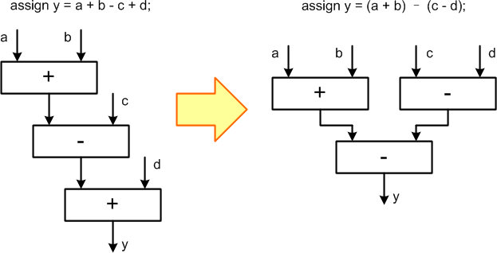
限制模块规模
有实验研究表明当逻辑电路的规模在2000至5000门时逻辑优化器的优化效果最佳 。所以对于规模较大的功能模块，我们应该将其分块处理。
降低频率和串行工作
那些对延时不敏感的应用（例如：非接触式智能卡、高性能SoC芯片中的低速接口模块等），可以使用降低频率和串行工作的方式来分散能量消耗，尽可能降低峰值功耗。
降低频率的挑战
使用降低频率来降低峰值功耗的方法会带来一些设计上的挑战，特别是需要动态调整频率的设计。
不同时钟域之间的数据交互
当一个芯片中存在多个时钟域的时候，不同时钟域之间进行数据交互需要特殊的同步机制来避免带宽差异和Metastability问题。
当发送端的发送带宽大于接收端的接收带宽时，会引起数据的丢失；反之，则可能使接收端采集到旧数据引发错误。我们可以使用流控协议（Flow Control Protocol）来保证这样的错误不会发生。其简单的实现就是握手信号。发送端通过valid信号通知接收端输出Data已经准备好；而接收端通过ack信号通知发送端已经将Data接收，发送端可以继续下一步的工作，并改变当前的Data值。
Metastability问题是由于两个时钟域的相位关系不可预测所造成的。接收端的采样时钟上升沿可能与发送端数据的翻转沿重合，这样可能会使得采样得到的数据处于非0非1的中间态。我们可以采用非对称Buffer或者多级采样的方法来保证正确性。
时钟不稳定时期的可靠性问题
如果我们需要对某些模块进行动态频率调整，那么在频率变化的过程中会出现时钟不稳定时期。在时钟不稳定时期进行任何动作都可能产生错误，所以我们需要设计一种完整的机制来保证时钟的安全过度。同时，如何对该时期的行为进行建模和验证都是非常困难的问题。
串行工作的代价
串行工作最简单的方法就是将单个流水级划分成多个流水级。但是这样会引入大量的触发器，从而消耗更多的面积和功耗，因此对于小规模的逻辑功能是不合适的。
基于Latch的流水线
图表 11：基于DFF的流水线（左）和基于Latch的流水线（右）
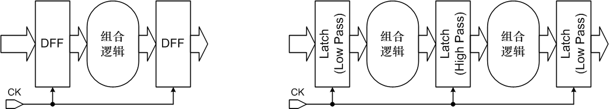
如图表 11所示，基于Latch的流水线可以看做将Master-Slave形式的DFF中的两个Latch拆开，并在其中间插入组合逻辑。如果使用Latch来代替DFF则能够降低增加流水线所带来的不利因素，且能够达到串行化的目的。
基于流控协议的串行化
图表 12：使用流控协议来人工进行不同模块之间的串行化
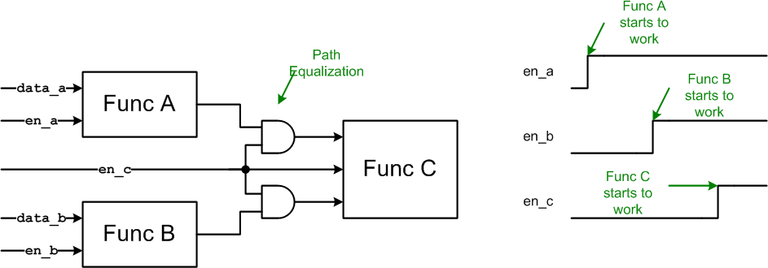
如图表 12所示，我们可以使用流控协议来人工进行不同模块之间的串行化。但是需要注意的是，为了保证Func C模块的输入不会发生多次翻转，而引起不必要的功耗，需要对其输入数据进行一个隔离。这样做的不利因素在于增加了RTL设计的工作量。
门级（Gate-Level）优化策略
首先我们在门级（Gate-Level）进行优化策略讨论。
可以借助EDA工具进行的优化
通过使用先进的低功耗设计流程，我们能够借助EDA工具的帮助，降低电路的功耗。同时，对于一些自动化工具不能够正确识别和处理的模块，如果我们自己能够了解这些简单易行的方法，也可以通过手动的方法进行修改。需要指出的是，在后端EDA工具流程中，这些优化项目常常是会根据实际情况自动执行的。但是需要我们提供足够多的信息，例如节点的翻转率信息等。
Transistor Sizing
进行低功耗设计最简单、最容易想到的方法就是调整晶体管的尺寸。增加尺寸会加快翻转速度、减小延时、减小输出信号Slope；增加输入输出负载、增加翻转功耗、降低下一级单元的短路电流、减小其内部功耗。反之，减小尺寸能够减小输入输出负载、减小翻转功耗；增加延时和输出信号Slope，增加下一级单元的内部功耗。因此，调整晶体管尺寸是一个需要多方面权衡的工作。
通常，我们可以将这样的工作交给EDA工具来做。让他们来遍历所有的可能性，从中找出最优化的结果。但是，这就需要我们提供丰富的标准单元库，对于相同功能的单元，我们需要提供多种尺寸的实现，以便EDA工具能够做出明智的选择。这种方法简单而且常用。
Re-Mapping
图表 13：Re-Mapping
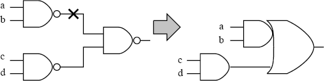
如图表 13所示，原本的两级与非门被重新映射到一个与或门，这样就消除了高翻转率的内部节点X，从而降低了电路的翻转功耗。
Phase Assignment
图表 14：Phase Assignment
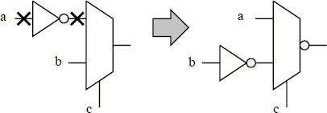
如图表 14所示，通过Phase Assignment，高翻转率的X节点被消除了，降低了节点翻转率，从而降低了翻转功耗。
Pin Swapping
图表 15：Pin Swapping
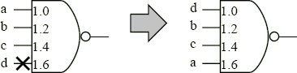
如图表 15所示，较复杂的门单元可能每个输入端的输入负载都不相同，例如图中四输入与非门四个输入端的输入负载分别为1.0, 1.2, 1.4和1.6。如果将高翻转率的节点d（标有X）接到高负载的第四个输入端，则翻转功耗会比较大。通过Pin Swapping，我们按照翻转率的排列关系，将较小翻转率的节点链接到较高负载的输入端，而将较大翻转率的节点链接到较低负载的输入端，从而降低翻转功耗。
Logic Restructuring
图表 16：Logic Restructuring
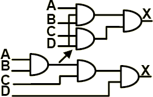
如图表 16所示，通过Logic Restructuring，EDA工具自动将使用三级门的实现方式转换为了两级门的实现方式。逻辑上效果是一样的，但是由于减少了门单元的级数，所以减少了内部翻转节点，从而降低了翻转功耗。
Transition Rate Buffering
图表 17：Transition Rate Buffering
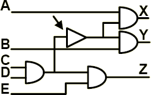
如图表 17所示，通过插入一个额外的Buffer，降低了中间节点信号的Transition，从而降低了X和Y两个与门的内部功耗。这种方式需要权衡Buffer的功耗和减小的内部功耗，所以需要做大量的遍历比较工作，只能借助EDA自动化工具。
Path Balancing (Path Equalization)
图表 18：Path Balancing
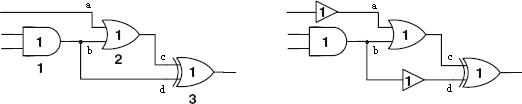
如图表 18所示，对于组合逻辑而言，由于各个Path的延时不同，所以会有大量的无效翻转发生，并引起无效翻转功耗。例如图中的节点a和节点b，由于路径长度不一样，所以a先发生翻转，b后发生反转，使得非门两次翻转。同样的问题也会发生在节点c和节点d上。如果插入了两个buffer，平衡了a和b、c和d之间的延时，就能够消除无效翻转，降低翻转功耗。同样，这样的工作需要仔细权衡，因此也需要借助EDA自动化工具来进行。
Operand Isolation
图表 19：Operation Isolation
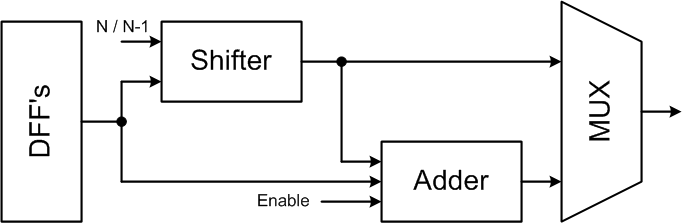
在设计中常出现Data Path分岔的情况。在某些情况下，Data Path的某一条岔道不需要工作，但是由于其输入在发生变化，所以仍然会出现内部节点的翻转，引起不必要的动态功耗。例如图表 19所示，一般的简单整数倍数乘法器可以用一个移位器加一个加法器来实现。当倍数N不为2的次方时，作移位操作后还需进行加法操作；当倍数N等于2的次方时，则不需要加法操作。所以可以在加法器中实现一个使能端，当不需要进行加法操作时将加法器的输入操作数屏蔽，使其不发生翻转，则不发生不必要的功耗。
Activity反标的意义
通过以上的讨论我们可以看出，大量的门级优化策略需要使用电路内部节点的翻转率。因为EDA工具依赖翻转率信息来进行某些优化策略的实施。所以如果应该尽快确定门级网表内部节点的翻转率情况，并反馈给后端工程师，以方便后端工具进行门级网表功耗优化。这样的过程可能需要迭代多次，直到得不到更好的优化效果为止。
低功耗单元
根据应用的不同，有的时候Foundry提供的标准单元库并不能很好的实现低功耗目标。这时就需要我们根据自己的需要定制一些低功耗单元。这些单元通常是一些功能较复杂、功耗较大的宏单元。比如：SRAM、CAM、多位比较器、Data Path、运算部件，甚至触发器和锁存器。在这里我们将介绍某些较复杂功能单元的低功耗设计技术。需要指出的是，这些低功耗设计方法随着应用的变化可能失效，因此在应用之前还是应该更深入的了解应用的特点，以寻找更适合更经济的低功耗设计技术。
Memory分块
片上Memory的每次读写能耗随容量的增加而快速增加，因为大容量的SRAM块需要更长的字线和位线，以及更复杂的地址译码电路。所以如果实际应用中不需要在全地址空间范围内随机读取，则可以将Memory分成较小容量的多个小块，并将当前不需要访问的地址空间关掉，以节省功耗。
多位动态比较器
图表 20：比较器：综合结果
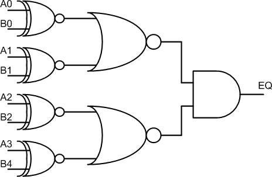
比较器是许多应用中的关键组成部件，例如地址或命令译码器等等。综合器使用多位的XOR、NOR和NAND组合来实现比较器，如图表 20。
普通的动态比较器
图表 21：比较器：普通的动态电路实现
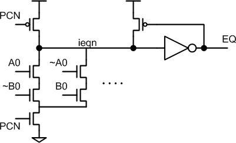
如图表 21所示的电路图是比较器常用的动态实现方法。PCN（Pre-Charge Negtive）首先为低，开始预充电阶段，对节点ieqn充电；随后PCN置高，进入Evaluation阶段，根据输入比较数据的不同，电路对ieqn进行选择性放电。这样的比较器在需要比较的位数较多时，相对于综合出来的组合逻辑有一定的优势，因为使用更少的晶体管。但是它也有明显的缺点：增加了时钟端负载；当输入数据不同时损失能耗，而对于通常的应用而言输入数据不同的情况远多于输入数据相同的情况。
改进型的动态比较器
图表 22：比较器：DMC（Dissipate-on-Match Comparator）
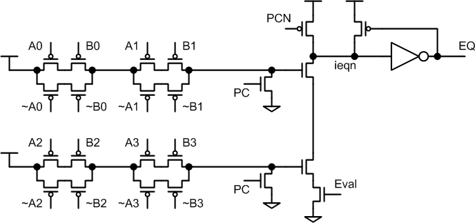
根据动态比较器的几个劣势，有研究者进行了改进，如图表 22所示。DMC比较器只在输入数据相同时才有能量损失，而且顾及到了比较器的速度。
关于动态电路的进一步讨论
一般而言动态电路的优势在于延时较低，其功耗一般比静态电路大。因为它增加了时钟负载，浪费了大量的能量在不工作的时候，即无效的翻转。但是对于实现复杂功能的电路模块，用动态电路实现可以使用较少数量的晶体管，所以除了时钟端以外它的功耗会比普通的静态电路小。为了减小时钟端的功耗浪费，可以将细粒度门控时钟与动态电路模块相结合。如果能够利用门控时钟完美的控制动态电路的输入时钟翻转，则能够最大程度的降低其时钟端的功耗浪费。从而在整体上达到比普通静态电路更低的功耗。
计数器
行波计数器
图表 23：行波进位计数器
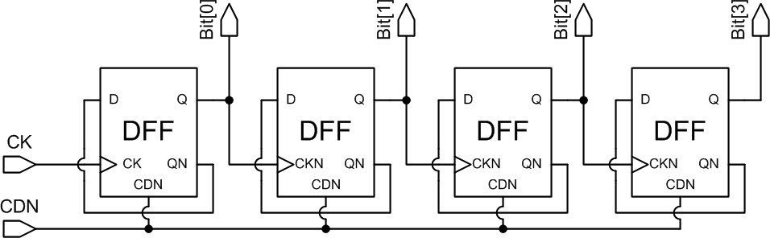
如图表 23所示，行波进位计数器的整体延时相比常用的基于加法器的计数器要大一些，但是由于使用器件更少所以功耗和面积更小。
触发器
触发器在同步设计中占有及其重要的地位，并且也消耗了大量的功耗，因为它们数量众多，面积较大且功能复杂，连接到了芯片中最高频的信号源——时钟。我们将在后面的“时钟网络”那一节对触发器的情况进行更加详尽的介绍。
调整电源电压
通过对功耗产生原因的分析我们知道，动态功耗和短路功耗都与电源电压的平方成正比。所以降低电源电压是降低功耗最有效的手段。在这一节我们将重点讨论通过调整电源电压来降低功耗的设计方法。
多电压设计（Multi-Voltage Design）
多电压设计领域有许多不同的技术分类，但是万变不离其宗。这里我们将它们简单地分为如下几类：
-
电压岛（Voltage Island）：不同的模块使用不同的固定电压
-
多级电压调整（Multi-level Voltage Scaling）：同一模块中同时存在多种电压源，根据应用不同可以在这些电压源之间切换
-
动态电压频率调整DVFS（Dynamic Voltage Frequency Scaling）：是“多级电压调整”的升级版。根据应用情况动态进行电压调整
-
自适应电压调整AVS（Adaptive Voltage Scaling）：可以看做是DVFS的升级版。使用能够监视电路行为的反馈电路，自适应的调整电压
其中“电压岛”类型的多电压设计最为常见，特别是对于大规模SoC设计更是如此。比如说片上的处理器核可以使用较高电压，因为需要追求更快的速度；片上的USB接口模块则可以使用较低电压，因为需要在满足协议规定的带宽的前提下尽可能降低功耗。
多电压设计的好处
根据Cadence的报告 ，电压岛设计能够降低40%至50%的动态功耗，且能将静态功耗降低2倍左右。而DVFS则能够降低40%至70%的动态功耗，且能将静态功耗降低2至3倍。
多电压设计的挑战
使用多电压设计能大幅度降低功耗，必然也会引进众多不利的因素，给我们的设计带来挑战。下面我们就来对它们进行一些介绍。
首先，在模块与模块之间进行数据交互时，由于信号电压不同，需要插入Level Shifter进行转换。因此如何设计Level Shifter，以及Level Shifter带来的功耗和延时增加都是需要考虑的问题。
其次，由于不同电压下，标准单元的延时和功耗都会发生巨大的改变。因此在进行时序分析的时候，我们需要针对各种不同电压值进行仿真和数据采集，以提供给EDA时序分析工具尽可能精确的时序数据。同时，由于需要考虑的情况以倍数增加，也给EDA时序分析工具带来更高的计算复杂，也需要耗费更多的运算时间。
然后，由于多电压设计需要多个电压源，则需要多个电源分布网络。这样对于Floorplan、电源分布网络设计和时钟网络设计等都提出了更高的要求。如何权衡布线资源和更低的IR Drop以及更高的覆盖率大大的增加了设计复杂度。
最后，由于各个模块可能使用不同的电压，所以需要仔细考虑在上电和下电时的时序问题。如果考虑不够周全的话，则有可能引起死锁。同样也给验证带来很大的挑战。
Level Shifter
图表 24：简单的Level Shifter：低->高（左），高->低（右）
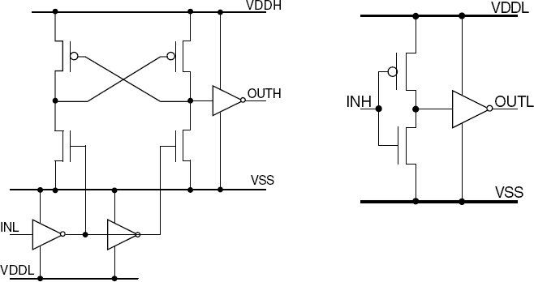
如图表 24所示，从高电平到低电平的Level Shifter非常简单，与Buffer类似，其延时和功耗都不大。但是从低电平到高电平的Level Shifter则比较复杂，而且有较大的延时和功耗。
需要注意的是，Level Shifter基本都是单向的，只能够单一方向的从高到低或从低到高。这样的限制对于类似“电压岛”这样的设计而言基本没有影响，但是如果需要动态调整电压，那么就需要谨慎了。对于动态调整电压的设计而言，各模块也不能够实现完全的电压自由度，还需要保持模块与模块之间确定的电压高低关系，是单向的Level Shifter始终能够正常工作。
时钟分布的难题
即使模块之间的电压可能不同，它们也有可能共享同一个频率的时钟。而且时钟分布网络需要很多分布在芯片中的Buffer。这些Buffer的电压很有可能不一样，所以如何有效地穿越不同电压的区域进行可靠的时钟分布是一个难题。
图表 25：多电压设计中的时钟分布难题
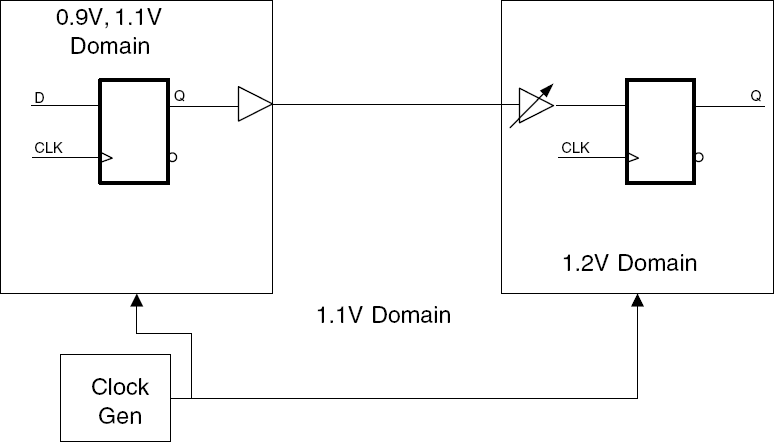
如图表 25所示，常用的做法是在孤立的电压模块之外（0.9V, 1.2V）使用一个统一的电压（1.1V）进行时钟分布。
验证的难题
对多电压设计进行验证时，我们需要模拟出完整的多电压环境。比如说不同的延时、不同的对Setup Time和Hold Time的要求、上下电序列等等。为了简化设计，可以将每个模块进行独立验证，然后通过更精确的仿真来保证接口时序，以及上下电序列时序。
亚阈值电路（Sub-threshold circuit）
如果考虑理想情况下的MOS管，当栅源电压VGS大于阈值电压VTH时，MOS管处于开启状态；反之则处于关闭状态。但是实际情况是，当栅源电压VGS小于阈值电压VTH时，MOS管不仅不会处于绝对关闭状态，而且即使VGS=0，仍然会有漏电流流过。这就引起了漏电功耗，如图表 26所示。
通常在数字电路中，为了保证电路的可靠性，需要使MOS器件工作于图中的Linear Region。因此我们通常将电源电压设置为高于两倍的VTH。但是如果我们利用这样的亚阈值电路特性，将电源电压降低到接近VTH甚至小于VTH的程度，就能够大幅度降低功耗。
图表 26：ID vs. VGS（右图纵坐标为对数坐标轴）
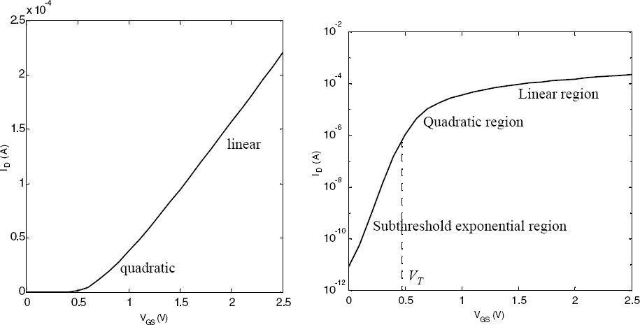
理论最低工作电压
根据理论计算，对于理想MOSFET而言，其室温下（300K）的理论最低工作电压为36mV；而通过实际仿真，90nm工艺的最低工作电压为48mV 。这都远远低于实际情况下我们使用的电源电压值。因此我们可以认为，为了追求超低功耗，电源电压还是有很大下降空间的。
亚阈值电路设计所遇到的挑战
在亚阈值工作区域，电路设计将受到诸多挑战：
-
当电压下降到一定程度，电路的延时将呈级数上升。所以亚阈值电路只适合于非常低速的设计。比如说无线传感器网络、RFID、植入式心脏起搏器等。
-
门电路结构需要对称设计，而且需要仔细选择其电路实现方式和尺寸。由于在亚阈值状态，开启的MOS管所能提供的电流与关闭的MOS管的漏电流并没有特别大的差距，门电路的功能与正确性常常与输入向量的值有很大的关系。
-
PVT偏差会对电路的功能带来致命危害。因为阈值电压对PVT的偏差非常敏感，而对于亚阈值电路，阈值电压的稍稍波动可能就会危及功能正确性（电路延时大幅度增加）。
-
对于触发器和Memory需要特殊考虑。因为存储信息的结构在亚阈值电压下可能会工作不正常。
真是由于这些问题，使得亚阈值电路对环境和工艺变化的鲁棒性不好，所以在工业界还几乎没有例子在使用亚阈值电压的工作方式。但是在学术界倒是有不少成功的例子，我们将在下一小节具体介绍。
学术界的几个例子
图表 27：“A 180mV FFT Processor using subthreshold Tehniques” (A. Wang)
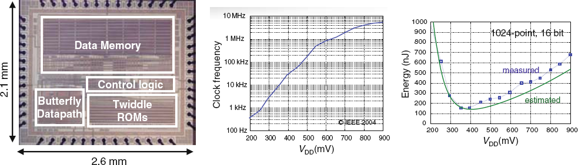
如图表 27所示，这是一个FFT处理器。它使用180nm CMOS工艺，电源电压最低能工作在180mV。当电源电压在0.35V左右时，每做一次FFT变换的能量是155nJ，时钟频率为10KHz，功耗为0.6uW
图表 28：“A 256kb Sub-threshold SRAM in 65nm CMOS” (B. Calhoun)
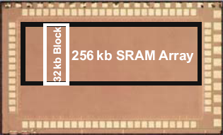
如图表 28所示，这是一个SRAM的测试芯片，当需要对其进行读写操作时，工作电压最低能达到400mV，当仅需要保存数据时，工作电压最低能达到250mV。在400mV、300K室温情况下，能达到475KHz，3.28mW。
图表 29：“Exploring variability and performance in a sub-200-mV processor” (S. Hanson)
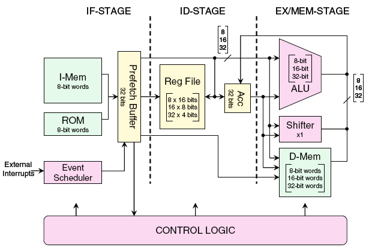
如图表 29所示，这是一个8位微处理器的结构框图。在350mV电源电压下，他能达到354KHz，每条指令仅需要3.5pJ的能量。在160mV电源电压下，其功耗只有11nW！如果使用1g锂铁电池对该处理器进行供电的话，它可以持续工作41年之久。
时钟网络
时钟网络是芯片设计中的重点，因为它功耗大、频率高，且对芯片整体性能和可靠性有非常大的影响。关于时钟网络的低功耗设计方法也丰富多彩、多种多样。因此我们将这一部分拿出来单独讨论。
时钟网络结构
Skew、资源占用（单元和布线）和功耗都是时钟网络非常重要的指标。其中Skew受到负载不平衡、PVT、IR Drop的影响。虽然我们不是非常关心时钟网络延时（时钟源到fan-out末端节点的延时），但是过长的延时仍然会在各种Variation的情况下导致较大的Skew。
常用的时钟网络结构有：RC-Tree、H-Tree、Mesh、Fishbone等。我们将在下面的部分做一一介绍。
RC-Tree
图表 30：RC-Tree
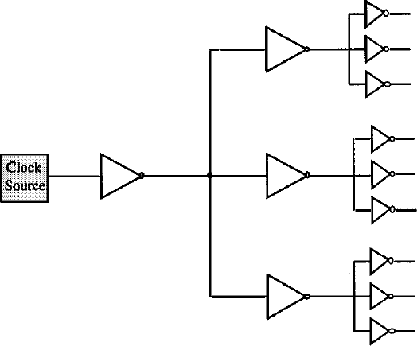
如图表 30所示，最普通也最容易想到的时钟分布方式，但是做到0-Skew需要耗费较多的资源。适合较小规模的设计。
H-Tree
图表 31：对称H-Tree 和X-Tree
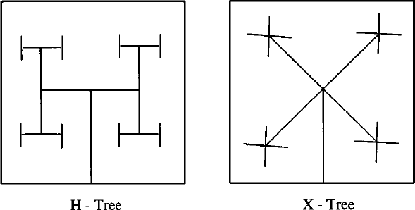
如图表 31所示，H-Tree可以达到更小的Skew。而X-Tree是H-Tree的一个变种。在H-Tree的末端再连接普通的RC-Tree来连接到触发器。
Mesh
图表 32：Mesh（也被称为Grid）
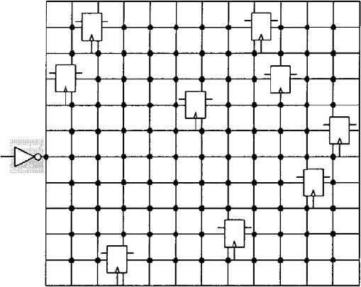
如图表 32所示，Mesh结构将时钟网络连成一个网状结构，以平衡不同位置的时钟Skew。需要注意的是，图中为了表述清楚，去掉了网格之间的Buffer。Mesh结构能达到很小的Skew，并且能够容忍PVT，但是需要消耗大量的布线资源和功耗。这种结构最先在DEC系列处理器中被采用。
Fishbone
图表 33：Serpentines (Fishbone) introduced by Intel
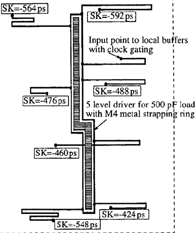
使用大尺寸驱动来驱动一根很大负载的大尺寸Wire，作为中心鱼骨。然后沿着中心鱼骨分出多条类似鱼刺的连线。调整每根“鱼刺”的长度以减小整体Skew。如图表 33所示为Intel在他们的x86芯片中使用的时钟网络结构。
触发器单元
触发器是时钟网络的负载。好的触发器设计不仅包括功耗低延时小的触发器单元，而且还包括良好的触发器分布和布局。因为它直接关系到时钟网络的性能和功耗。在这里我们将讨论几种触发器单元的设计方法。
双沿触发器
时钟网络在每个时钟周期都需要翻转两次，普通的上升沿（或下降沿）触发器仅仅使用其中的一个翻转。所以时钟网络上的能耗并没有被完全的利用。为了能够充分利用时钟网络的能耗，研究人员设计出多种在时钟上升和下降沿都触发的双沿触发器，如图表 34、图表 35、图表 36和图表 37所示。
但是我们发现，为了达到双沿触发的效果它们要么采用了延时链，要么采用了非常复杂的内部设计，其真正的功耗优化效果，特别是在较先进工艺下的实际效果还有待考量。
图表 34：Hybrid Latch-Flip-Flop (HLFF)
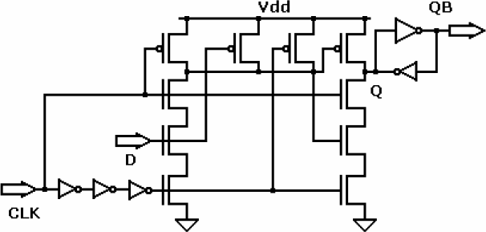
图表 35：Sense Amplifierbased Flip-Flop (SAFF)
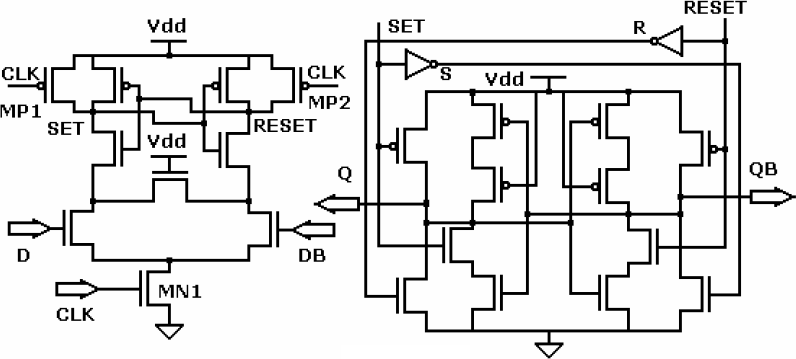
图表 36：Conditional-Capture Flip-Flop (CCFF)
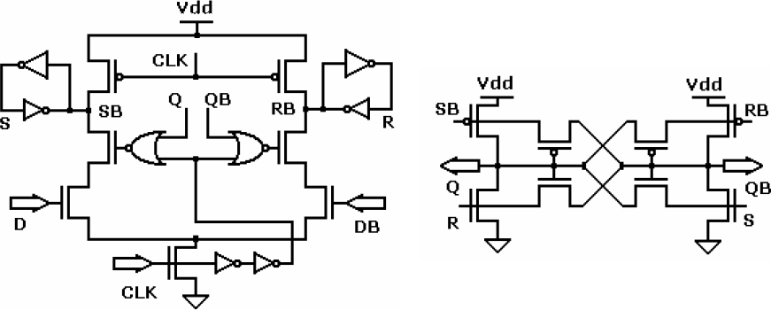
图表 37：Dual-rail static edge-triggered latch (ETL) .
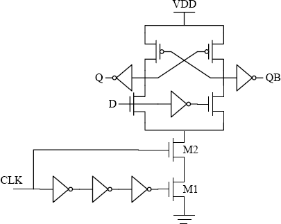
低摆幅触发器
图表 38：两种低摆幅双沿触发器
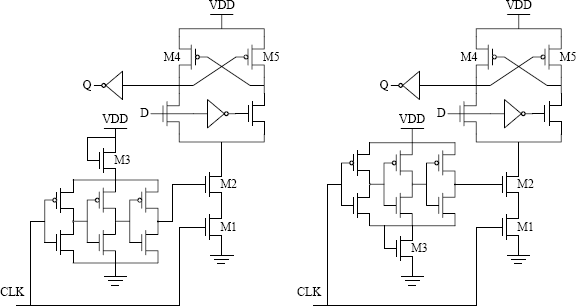
为了降低时钟网络的功耗，我们可以将时钟摆幅降低。但是我们需要设计配套的低摆幅触发器。如图表 38所示，该论文作者提出了两种低摆幅的双沿触发器。使用这样的触发器能够有效降低时钟网络的功耗。
Impinj的触发器
图表 39：Impinj Monza芯片中的DFF触发器（为了表示对专利的尊重，图中有一处错误。）
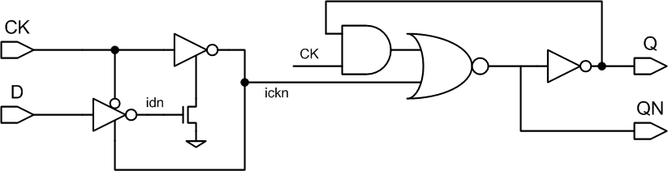
通过分析Impinj的触发器网表，我们发现了其芯片中最常用的触发器有很明显的特色，如图表 39所示。由于使用了较特殊的结构，使得其时钟端CK仅仅连接了5个MOS管，因此大大降低了时钟网络的负载，从而降低了时钟网络的功耗。
与前面的低摆幅触发器相比，由于低摆幅触发器使用低摆幅时钟，节省了时钟网络的翻转功耗。虽然其结构中CK端直接接的只有3个MOS管，但是CK翻转会引起一系列的动作，所以其内部功耗较大。而Impinj触发器因为结构简单，随CK反转的内部节点较少，所以内部功耗较小。
门控时钟（Clock gating）
门控时钟是现在使用的最为广泛的低功耗设计方法之一。因为它对动态功耗的优化效果可以达到20%左右 ，并且对芯片性能几乎没有影响，对设计和实现复杂度的提升也很低。需要注意的是，使用门控时钟技术之后，虽然各个模块的输入时钟不同，但是它们之间有固定的相位关系，因此属于同一个时钟域的问题。
图表 40：Clock Gating示意图
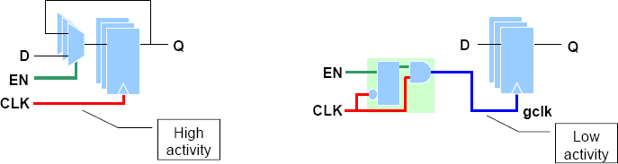
门控时钟的基本原理如图表 40所示，在时钟树上插入时钟门控单元，来降低时钟的翻转频率，从而减少不必要的翻转和功耗损失。
Clock gating cell
图表 41：Clock gating中出现的毛刺

如果我们单纯的使用与非门来对时钟进行控制，而不是用特殊的Clock gating cell，那么就有可能出现毛刺现象，如图表 41所示。因此我们需要在与非门之前加入一个Latch，它能够在时钟为低电平时让Enable信号通过，从而避免了毛刺，如图表 42所示。
图表 42：Clock gating cell

Enable信号的时序问题
图表 43：Enable信号的时序问题
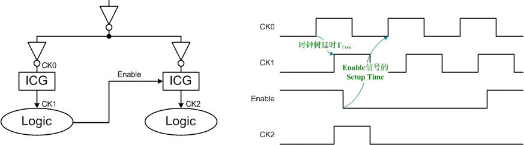
如图表 43所示，由于Enable信号往往也是由逻辑电路产生，而这些逻辑电路则由Gating之后的时钟所控制，所以Enable信号与CK0之间有一个时钟树的延时TTree。如果TTree很大的时候（比如将门控单元插入到时钟树靠近时钟源的位置，以控制更大范围的逻辑，可以减小功耗和面积），则有可能发生Enable的Setup Time不能满足时序要求的情况。所以门控单元ICG的插入位置需要权衡功耗、面积和时序。
Clock gating fanout
图表 44：Clock gating fanout
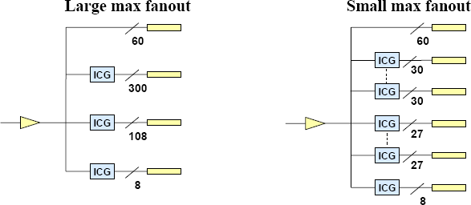
如图表 44所示，如果我们在EDA软件中，将Clock gating fanout参数设置的较大时，可能会出现图中左边时钟树不平衡的情况，而如果将该参数设置的较小时，则会插入较多的ICG单元，增加了面积和功耗。
如果在可以忽略ICG单元的副作用的情况下，fanout参数设置的越大，即时钟门控的粒度越粗，则时钟网络功耗越小，因为屏蔽了更多的时钟树部分；fanout参数设置的越小，即时钟门控的粒度越细，则逻辑部分功耗越小，因为减少了更多的无效翻转。
所以，fanout参数的选择需要权衡两个因素：对逻辑部分更精确的控制和插入ICG单元所增加的面积、功耗和设计复杂度（满足时序要求更难）。前者与设计紧密相关，有的时候并不是插入越多的Clock Gating单元，就能降低更多的功耗。
低摆幅时钟（Reduced Swing Clock）
在前面关于触发器的部分我们曾经提到过低摆幅触发器。因为降低电压是最重要的低功耗设计手段。为了能够提供低摆幅的时钟源，我们还需要低摆幅的Level Converter。
图表 45：常用的Level Converter
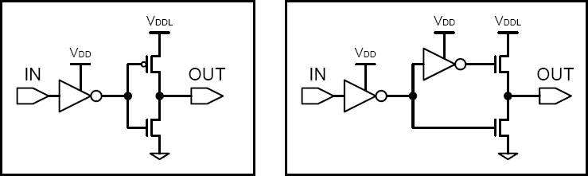
如图表 45所示为常用的Level Converter。它需要额外的低电压源VDDL。
图表 46：不需要VDDL的低摆幅信号产生器14
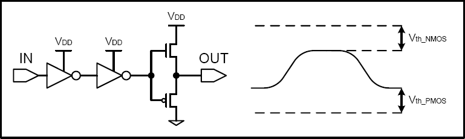
如图表 46所示为不需要VDDL的低摆幅信号产生器。它巧妙地利用了NMOS管（和PMOS管）在传输高（低）电平时的阈值损失，不需要额外的VDDL，就能够产生出低摆幅信号。
共振时钟（Resonate clock）
低功耗设计中有一些非常重要的研究领域，它们可能在工业界应用很少，但是仍然被寄予厚望。研究人员希望能借由这些技术来突破现有技术的瓶颈。Energy Recovery、片上光互连、异步电路基本上是属于这个范畴的。以下三小节我们将对他们逐一做简单介绍。
图表 47：共振时钟的原理
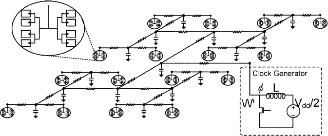
共振时钟是Energy Recovery技术在时钟网络上的应用。笔者认为它也是Energy Recovery技术最接近实用的一次尝试。如图表 47所示，时钟发生器（Clock Generator）包括一个不断自我振荡的电感、一个为振荡补充能量Vdd/2的电压源和一个控制能量补充行为的NMOS管。由于电感的存在，这种正弦振荡并不会消耗什么能量。这也是Energy Recovery 技术的关键思想。
图表 48：正弦振荡时钟信号与普通时钟信号的对比
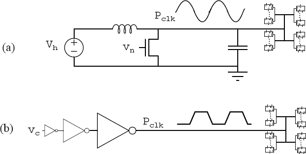
但是，这种正弦振荡波与普通的时钟信号虽然本质类似，但是表象上有很大不同，如图表 48所示。因此就需要设计出特殊的触发器或Latch来适应这样的正弦时钟信号，以满足同步数字逻辑的设计需求，如图表 49所示。它们能够利用正弦振荡波作为时钟信号输入对数据进行采样和保持。时序图如图表 50（左）所示。为了能够与广泛使用的EDA软件流程兼容，还需要能被EDA软件接受的等效时钟，如图表 50（右）所示。
图表 49：PMOS Energy Recovery FF（左）NMOS Energy Recovery FF （右）
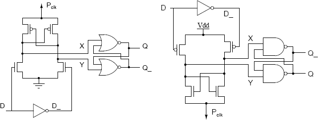
图表 50：Resonate Clock时序图（左）与等效时钟（右）
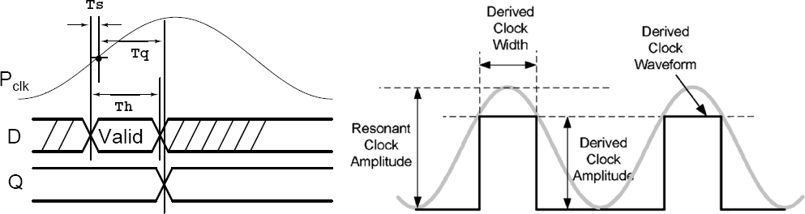
对于Resonate Clock的研究集中在密西根大学（University of Michigan）Electrical Engineering and Computer Science系的Advanced Computer Architecture Laboratory实验室。
片上光时钟网络（On-chip Optical Clock Network）
片上激光器的历史并不短，但是真正接近实际应用还是近几年的事情。特别是随着工艺进步和单位成本的不断降低，与流行的CMOS工艺兼容的片上激光器工艺也已经被研究出来。法国巴黎的LEOM实验室研究开发出的片上光互连技术在现有金属层上方增加数层适合制造激光器和光电二极管的III-V族化合物层，并利用二氧化硅作为波导材料。能够实现片上网互连与现有CMOS工艺的结合，如图表 51（左）所示。
图表 51：LEOM片上光互连技术（左）和基于光互连的时钟分布网络（右）
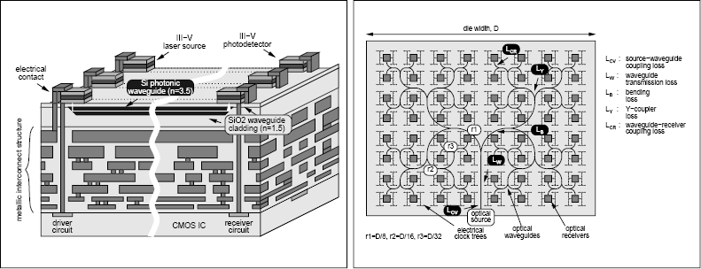
同时，他们利用这种片上光互连工艺技术开发出基于光互连的始终分布网络（片上光网络），如图表 51（右）所示。时钟信号在片上光波导中传播，损耗极小。到达终端之后再由片上光电二极管转换成电信号时钟。很显然，这样的技术适用于非常大规模的设计，比如多核处理器和大型SoC等，如图表 52所示。
图表 52：光时钟网络和电时钟网络在不同芯片尺寸和工艺制程下的功耗对比
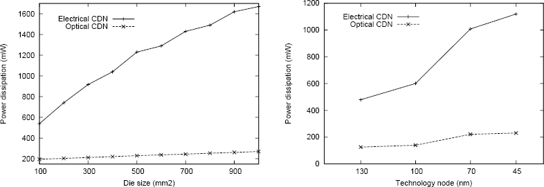
异步电路（Asynchronous design）
异步电路的设计理念由来已久，甚至长于同步电路的历史。但是由于设计复杂度不断提高，异步电路逐渐被替代和边缘化。一方面是因为其设计复杂度较高，需要消耗大量的人力来进行设计和验证工作；另一方面是因为异步电路的设计理念与先进的EDA设计流程不兼容，因此缺乏EDA工具支持。
但是由于其不需要维持功耗巨大的时钟分布网络，所以对异步电路的研究主要集中在低功耗设计领域。
图表 53：异步逻辑流水线
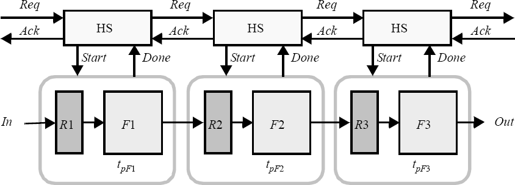
如图表 53所示，异步逻辑流水线使用Handshake（HS）逻辑来控制数据的流动，而不是同步时钟。而用于实现逻辑功能的触发器加组合逻辑的流水线模块与同步设计并没有什么不同之处。图表 54所表示的是四相握手协议的时序图。
图表 54：四相(Four-Phase)握手协议
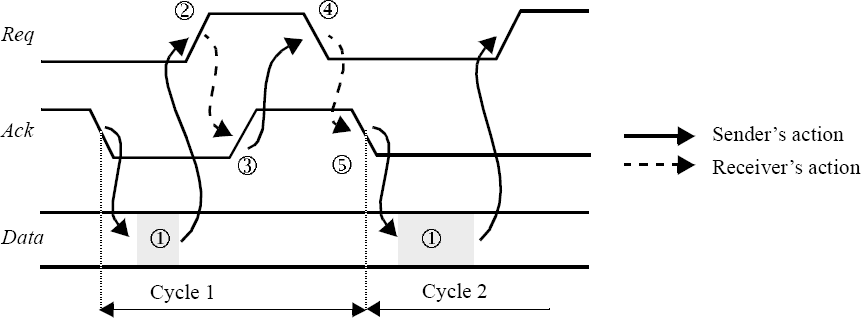
漏电功耗优化策略
漏电功耗虽然在我们的产品中不占主要部分，但仍然是非常重要的研究对象，特别是对于手持移动设备来说更是如此。所以会有很多的相关技术旨在减小芯片的漏电功耗。在这里我们将对这些技术进行介绍。
图表 55：漏电流的组成
如图表 55所示，漏电流功耗包括：
-
I1：二极管反向偏置电流
-
I2：亚阈值电流
-
I3：栅极引起的漏极漏电流
-
I4：栅氧漏电流
其中I2：亚阈值电流是最大的组成部分。因此在本节，我们将重点考察亚阈值漏电流的多种控制方法。
控制阈值电压（Threshold Voltage）
图表 56：阈值电压 vs. 漏电流
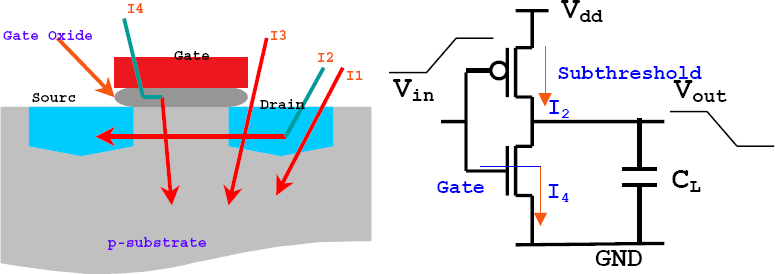
如图表 56所示，增加阈值电压将减小漏电流，反之则可以减小漏电。所以我们可以通过控制阈值电压来降低漏电功耗。
MTCMOS（Multi-threshold Transistor）
在同一工艺中提供多种阈值电压的晶体管，并用他们设计实现多种阈值的标准单元库供EDA工具选择。低阈值的晶体管由于开关速度较快，所以可以用在对延时要求较高的关键路径上。但是它们的亚阈值漏电流较大。开关速度较慢的高阈值的晶体管则可以用在非关键路径上，因为它们的亚阈值漏电流较小。这样可以在不损失性能的前提下尽可能降低芯片的整体漏电功耗。
在RFID项目所使用的TSMC 0.18um工艺（TSMC 0.18um Mixed Signal Salicide for RFID）中就有多种阈值电压的晶体管，如图表 57所示。
| Min Width (um) | Min Length (um) | Vth0 (V) | Model Name | ||
|---|---|---|---|---|---|
| 1.8V Normal Vth | NMOS | 0.22 | 0.18 | 0.486 | nch |
| PMOS | 0.22 | 0.18 | 0.451 | pch | |
| 1.8V Medium Vth | NMOS | 0.22 | 0.3 | 0.269 | mench |
| PMOS | 0.22 | 0.25 | 0.128 | mepch |
图表 57：TSMC 0.18um工艺1.8V多阈值晶体管
VTCMOS (Variable Threshold MOSFET)
如果改变MOS管衬底端偏置电压，则能够改变MOS管的阈值电压。将PMOS的衬底N-Well接到比VDD更高的电平，则会增加其阈值；将NMOS的衬底P-Well接到比GND更低的电平，也会增加其阈值。反之亦然。所以，如果增加一个片上的电压产生器，则能够通过调节衬底的偏置电压来调节晶体管的阈值，使其在Active状态降低阈值，提高性能，在Standby状态升高阈值，降低漏电功耗，如图表 58所示。
图表 58：VTCMOS示意图
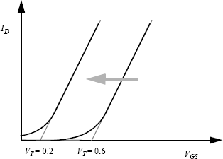
DTCMOS (Dynamic Threshold MOSFET)
与VTCMOS的思想类似，根据模块的运行状态动态地，通过改变衬底偏置电压的方法调整其阈值电压，能够兼顾性能和功耗。这样的技术一般基于SOI工艺。
关于衬底偏置的进一步讨论
VTCMOS和DTCMOS两种技术非常类似，都是使用了衬底偏置电压来改变晶体管阈值电压。这样的方法虽然理论上能够在不影响性能的条件下降低漏电功耗，但是也会带来很多不利影响。因为每个晶体管，或每一组晶体管都需要独立的衬底井和电源走线；额外的片上电压产生器会消耗动态功耗等。
而且随着工艺制程的不断进步，衬底偏置所带来的好处也在不断缩小。根据TSMC的试验数据，在90nm工艺下这样的技术能够把漏电功耗降低4倍，而在65nm工艺下则仅有2倍。
控制栅极电压（Gate Voltage）
SCCMOS（Super Cut-off CMOS）
通过前面的讨论我们知道，改变衬底偏置电压能够改变阈值电压，从而降低漏电电流。同样，升高PMOS的栅极电压也能够达到类似的效果。SCCMOS（Super Cut-off CMOS）就是利用这个原理。使用类似思想的还有Gate-Over-Driving CMOS和MVCMOS（Multi-Voltage CMOS）。
BGMOS
由于高阈值电压的晶体管开启速度比较慢，所以为了不影响延时不能大范围使用。但是如果增加这些晶体管的栅极电压，则能够使其开启状态下的最大电流与普通晶体管持平。如图表 59所示，在Standby状态，高阈值的LS晶体管漏电流很小；在Active状态，由于加载了更高的栅极电压，所以不会影响性能。
图表 59：BGMOS原理图
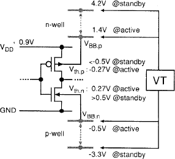
关于控制栅极电压的进一步讨论
控制栅极电压与控制阈值电压一样需要额外的片上电压产生器，这会带来动态功耗的损失。而且升高栅极电压是对栅氧层的一个考验，会降低芯片的可靠性。
Transistor Stack
当某一模块的输入向量比较固定的时候，可以根据这些向量的特点使用自动化工具来插入一些串接晶体管，以降低漏电电流。这样的方法简单易行，且不需要更改设计。比如Input Vector Activation 和Stacking Transistor Insertion 以及Stack Forcing 都是使用了这样的思想。但是这些方法很明显的缺点在于会增加面积，并且仅适用于那些输入向量有规律的设计和应用。
门控电源（Power gating或PSO）
图表 60：门控电源示意图
我们知道，如果去掉加载在数字逻辑上的电源电压的话，就能够掐断漏电电流的来源，从而有效降低漏电功耗。门控电源就是基于这样的思想的低功耗设计技术。如图表 60所示，在电源VDD SUPPLY与数字逻辑之间插入一个PMOS管，在不需要工作的时候关断它。
输出隔离（Isolation）
由于在Standby状态，电源被门控关断部分的输出会处于浮动状态，如果将其直接输出到正常工作的下一级电路模块，则会引起状态错误。所以，当电路被关断的时候，需要将其输出进行隔离。这里只要使用一个简单的与门就可以达到效果，如图表 60所示。
状态保存（State Retention）
将电源关断之后，电路内部和输出节点的信息都被清除了，所以上电之后不能够恢复到电源关断之前的状态。因此我们需要状态保存机制，以保证电源恢复之后，电路内部和输出节点能够恢复到关断前的状态。这里常用到就是SRPG（State Retention Power Gating）触发器。它能够在下电之后仍然保持输出，如图表 61所示。
图表 61：状态保存触发器
上下电顺序序列（Power Cycle Sequence）
如果使用了Power Gating技术，还需要仔细设计上下电顺序序列，以保证上电恢复之后，电路输出也能恢复，如所示。
图表 62：上下电顺序序列
效果讨论
Cadence的研究报告 对多阈值工艺、衬底偏置技术和门控电源这三个工业界常用的降低漏电功耗的低功耗设计方法进行了比较，如图表 63所示。
| 漏电功耗降低幅度 | 对时序的影响 | 对面积的影响 | Time to Market | 实现复杂度 | 设计复杂度 | 设计复杂度 | |
|---|---|---|---|---|---|---|---|
| 多阈值工艺 | 2 ~ 3倍 | ~ 0% | 2 ~ -2% | 低 | 低 | 无 | 无 |
| 衬底偏置技术 | 10倍 | 10% | <10% | 高 | 高 | 中高 | 中 |
| 门控电源 | 10 ~ 50倍 | 4 ~ 8% | 5 ~ 15% | 高 | 中高 | 高 | 高 |
图表 63：低漏电功耗设计方法的效果比较
总结
我们公司的非接触式产品对于功耗的要求很高，因此需要仔细进行功耗规划和低功耗设计。在这一部分，我们将把前面提到的低功耗设计方法进行总结，将能够用到的技术提出来供各位同事参考。
细致的RTL代码优化
这一部分的优化工作是最容易实施的。但是需要数字电路设计工程师细心对RTL进行优化和改进。
在此分享一下其他公司项目组的经验。他们将RTL分为逻辑RTL和物理RTL两步骤。逻辑RTL设计者负责功能设计，并保证其正确性，使其RTL代码可以用于代码验证和FPGA验证流程；物理RTL设计者以逻辑RTL为依据进行非常细粒度的RTL优化。通过形式化验证工具保证两者的功能一致性。这样工作的前提是产品功能极其复杂，产品线单一，对性能或功耗追求极致。这样划分的方式会使得工作量急剧上升，但是如果并行工作开展的话，设计时间并不会上升太多。如果培训得当，可以将逻辑RTL和物理RTL的设计者合并。这就需要前段数字电路设计工程师对后端工具和RTL对应的电路要有深刻的认识和理解。
降低频率和串行操作
由于我们的产品大部分是功耗限制的应用，对延时并不是非常敏感。所以我们能够降低频率或者将并行操作改进为串行的，以换取更低的峰值功耗。具体的设计方法可以参考前面的论述。
先进的低功耗后端流程
为了使用先进的低功耗后端流程，我们需要尺寸非常丰富的低功耗标准单元库。并且应用Activity反标技术，根据功耗报告对RTL进行不断地迭代改进。这就需要后端工程师与前端工程师密切配合，而且需要他们能够尽可能互相了解对方的工作和方法。
定制的低功耗宏单元
依据实际情况的需要，对功耗较大的单元进行全定制设计，以追求更低的功耗。采用这样的方法能够获得较大的收益，但是也意味着增加大量的工作和流片风险。定制的低功耗宏单元需要经过流片验证才能在量产中放心使用。
完整的Clock gating策略
我们需要在设计初期，尽早制定完整的Clock gating策略，并将这种思想融入到模块设计和RTL代码中去。在前端设计中，实施Clock Gating策略的基本思想就是尽量使得每一个触发器都有一个Enable信号，使其在不工作的时候能够被关断时钟。因此需要在设计的初期（功能设计、模块划分时）就开始考虑Clock gating的问题：为每一个逻辑功能加上使能；在同一子模块中，尽量只包含相同使能的逻辑功能。这样可以将剩下的工作交给后端EDA工具去解决，让它们去权衡众多的利弊因素，然后决定在什么位置插入ICG单元。